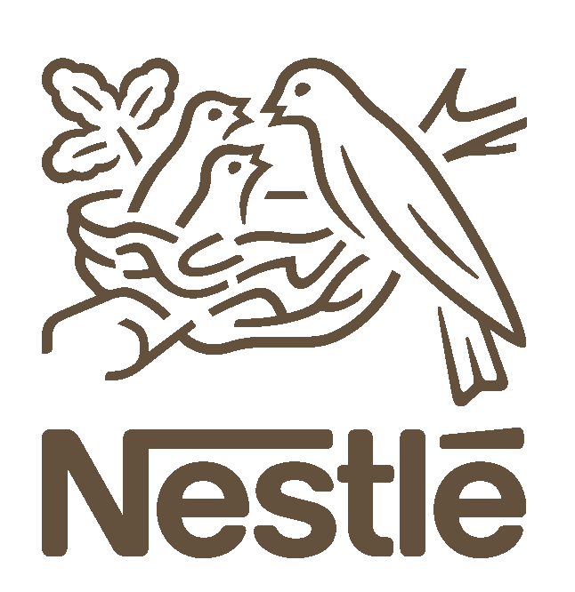
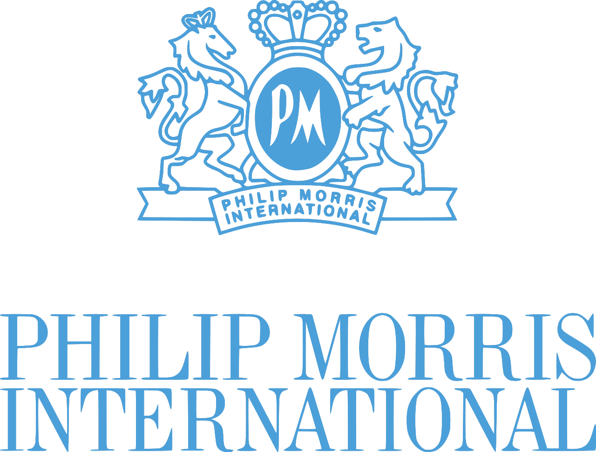

Experience

2012 to 2018 - Packaging Group Leader, Nestlé, Switzerland
Lead a team of 4 project managers for Nescafé Dolce Gusto at the STC. Engineering, prototyping, testing and industrialisation of capsule components. Expertise in injected and thermoformed polypropylene and EVOH rigid parts and laminated and coated flexible films in PET and Aluminium.
- secured full double sourcing by throughly analysing the complex 5 billion parts/year supply chain and industrializing existing capsule components at new packaging suppliers
- established and delivered a packaging cost reduction program achieving cumulated 25 mioEur savings over 3 years
2006 to 2012 - Senior Project Manager, Rolex, Switzerland
Coordinating specialists in watch engineering, quality and production. Overall project management from brief through development to market launch. Expertise in machined micro-mechanical parts in steel and silicon and of stamped, PVD and electroplated cases, bracelets and dials in steel.
- successfully launched 7 new watches over the years, including theinnovative anti-magnetic Rolex Oyster Milgauss, all presented at the Basel World fairs

2003 to 2006 - SAP Plant Maintenance Team Leader, Philip Morris, Switzerland
Lead a team of 5 operations experts and 2 IBM SAP consultants. Advisor for the World Class Maintenance program. On site support in Holland, Germany, Argentina, Brazil, Russia and Lithuania.
- designed, developed and implemented the SAP Plant Maintenance solution for the Swiss Neuchâtel plant (300+ users on the shop floor)
- managed to launch the project 2 weeks ahead of schedule by successfully leveraging the capabilities of the IBM off-shore software development platform in India
Leading a team of 25 logistics operators. Ensuring daily logistics and running logistics optimisation projects.
1998 to 2001 - Production Supervisor, Philip Morris, PortugalShift supervisor in 3x8h of ~100 persons (operators and technicians). Daily troubleshooting on the shop floor in order to achieve the factory output of average 40 million parts, while ensuring quality and safety standards.